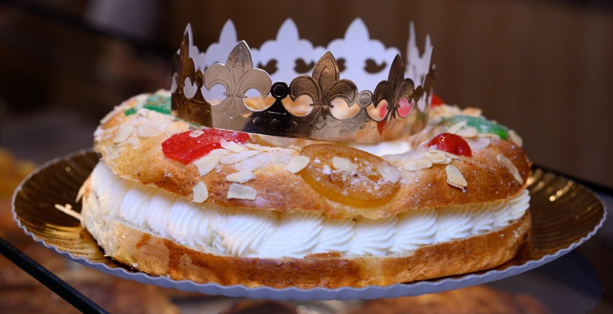
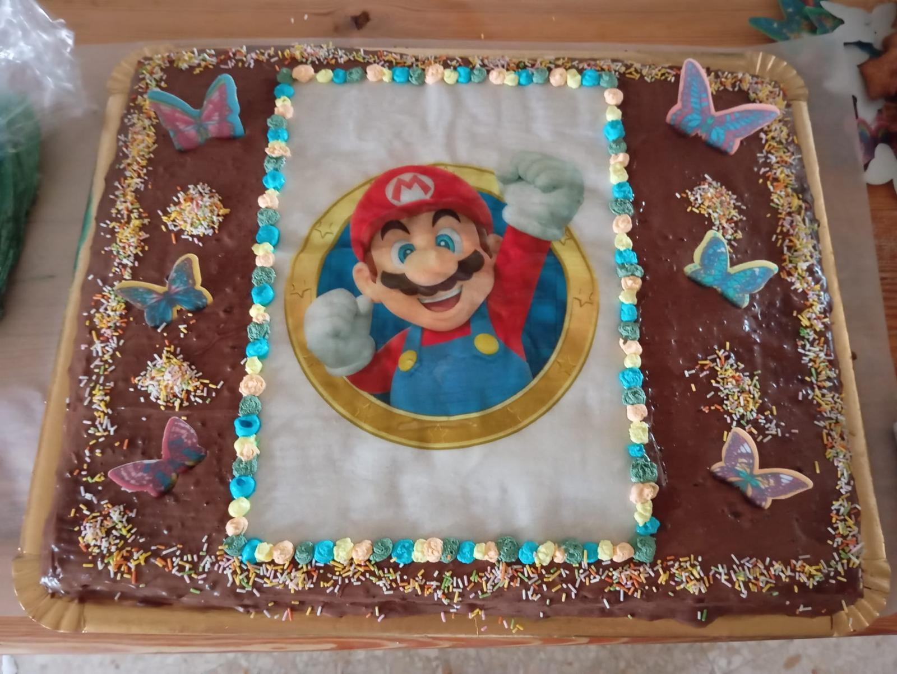

Celebraciones y Temporada
Elaboramos pasteles y dulces especiales para fechas señaladas y eventos, manteniendo la calidad y tradición artesanal.
Roscón de Reyes

Tradicional roscón de Reyes, relleno y decorado con frutas escarchadas, ideal para compartir en familia.
Tartas Personalizadas

Tartas a medida para cumpleaños, bodas o eventos especiales, decoradas según tus preferencias.
Pastelitos para celebraciones

Pequeños dulces decorados para completar cumpleaños, reuniones y mesas dulces.
Tartas San Valentín

Tartas personalizadas para el día de San Valentín, con varias formas, incluyendo corazón.